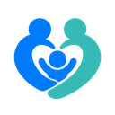

陪伴成长 · 共同守护每个孩子，
每个孩子，
都有自己的模样。
把温暖的陪伴融入记录。
统一的品牌语言，四季相伴的儿童形象。
守护蓝陪伴青云白
sJIA 守护者联盟
家庭陪伴 · 儿童记录
应用图标
深色界面

32 px 图形四季儿童形象
选择年龄，找到熟悉的身影。
16 套形象 · 透明 PNG · 独立 Master
形象使用规则
年龄与姿态6–12 个月采用坐姿，1–3 岁采用站姿；各年龄分别制作身体比例。
季节与外观四季服装共享同一角色面容，监护人可以按所在地区与个人喜好选择。
资料与形象身体颜色、表情与衣物均不映射临床结果；资料仍通过分类入口展示。